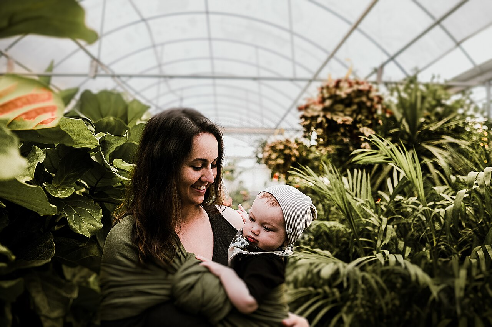

Catat momen kecil anak di rumah, lalu susun menjadi arah yang lebih tenang.

Tumbuh membantu merapikan observasi harian agar momen kecil tidak hilang begitu saja.
Ringkasan perkembangan membantu orang tua berdiskusi dengan dokter, terapis, psikolog, atau sekolah tanpa hanya mengandalkan ingatan.
Insight Tumbuh bukan diagnosis, melainkan bahan observasi dan diskusi yang lebih rapi.
Coba latihan pilihan visual 10 menit setelah makan sore.
Platform pendamping digital untuk orang tua anak berkebutuhan khusus.